This multi-purpose note-taking application helps you to:
- Easily take all sort of notes
- Collect research results and share them
- Centralize your project data and reuse it
- Quickly organize your thoughts in idea boxes
- Keep track of your information in a smart way
- Make intelligent To Do lists
- And a lot more...
What's New in Basket 2.0 Beta 2
- Bug fixes from 2.0 Beta 1
- Added the ability to create cross references between baskets
What's New in Basket 2.0 Beta 1
- Ported to Qt 4 and KDE 4
- Source code now resides on Gitorious
What is It?
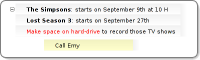
Take Notes
It is easy to write down your ideas as you think: click and type. But there is more than styled text...
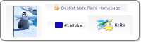
Collect any Data
... you are free to paste images, links, email addresses, files, application launchers, colors, grab a screen zone, pick a color from screen.
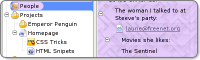
Easy Organization
Organize your notes in a hierarchy of baskets, by topic or project. Group notes together, collapse non-important groups... You can also let the application automatically layout your notes in columns or you can manually place them precisely.
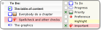
Tag your Notes
Attach tags to any note you take: "Important", "Information", "Idea", "Work", "Personnal"... Tags change the appearance of notes, and multi-state tags let you create checkboxes for To Do lists, progress-bars, priority-meters, etc.
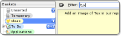
Quickly Retrieve Your Thoughts
Instantly find your notes by word or by tag, as you type, no matter where you placed the important information you're searching for.
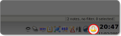
Always at Hand
The application is always running in the background, minimized to a system-tray icon. Writting down new ideas is one click away. Or one keyboard shortcut away, if you prefer. You can also drop things onto that icon, or use the numerous keyboard shortcuts to quickly append data to your baskets.
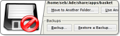
Safe Data
Your notes are automatically saved as soon as you modify them. No need to manually save them: you will have to break your habit of pressing Ctrl+S every five seconds! To make your data ultimately safe, you can easily backup and restore your entire basket collection.
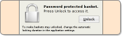
Password Protection
You can protect some or all of your data with a password so that you are the only person who can access them. Data can also be encrypted with public/private keys, if you want.
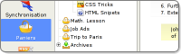
Embeddable into Kontact
You can use the application standalone, or as part of Kontact. You choose what is more practical to you.
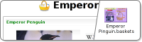
Quickly Share your Data
You can save a set of baskets to a file for your co-workers to modify them and send you back the result. If they have not installed BasKet Note Pads, do not worry: you can export the baskets to HTML web pages. You can even publish your research results online. And, of course, you can copy or drag your notes to other applications.
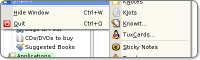
Import from Other Applications
If you already use KNotes, KJots, KnowIt, TuxCards, Sticky Notes, Tomboy or simple text files, then it will be lightning fast to start using BasKet Note Pads with your previous notes. A few clicks and you can enjoy the power of BasKet Note Pads over your previous note taking application. Your original data is not changed, so you can come back to your old application if BasKet Note Pads does not satisfy you.
Latest News
[2010-09-30] Basket 2.0 Beta 2 (1.81) Released
BasKet 2.0 Beta 2 (1.81) is now available for download!
This release adds the ability to create cross references between baskets and fixes bugs that were present in 2.0 Beta 1.